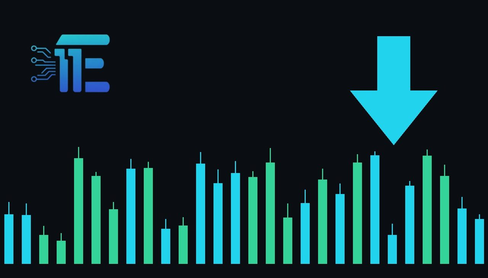

Fed Preferred Inflation Gauge Accelerates to 3.8% in Octoberរង្វាស់អតិផរណាសំខាន់របស់ Fed កើនឡើងដល់ 3.8% ក្នុងខែតុលា
XAU/USD impact: ▼ Bearishផលប៉ះពាល់លើ XAU/USD: ▼ ធ្លាក់

The personal consumption expenditures price index accelerated to an annual rate of 3.8% in October, matching market expectations. Resilient inflation pressures could keep US interest rates elevated, weighing on non-yielding gold.
សន្ទស្សន៍ថ្លៃចំណាយលើការប្រើប្រាស់ផ្ទាល់ខ្លួនបានកើនឡើងដល់កម្រិតប្រចាំឆ្នាំ 3.8% ក្នុងខែតុលា ដែលស្របតាមការរំពឹងទុក។ សម្ពាធអតិផរណាដ៏រ៉ាំរ៉ៃអាចជំរុញឱ្យអត្រាការប្រាក់នៅកម្រិតខ្ពស់ ដែលជាកត្តាសង្កត់លើតម្លៃមាស។
The Federal Reserve's preferred measure of inflation, the personal consumption expenditures (PCE) price index, accelerated to an annual rate of 3.8% in October. The official reading aligned with the Dow Jones consensus forecast, which had anticipated an annual figure of 3.8%, demonstrating that price growth remains persistent and raising the policy stakes for the central bank heading toward 2027.
រង្វាស់អតិផរណាដែលពេញចិត្តបំផុតរបស់ Fed គឺសន្ទស្សន៍ថ្លៃចំណាយលើការប្រើប្រាស់ផ្ទាល់ខ្លួន (PCE) បានកើនឡើងដល់កម្រិតប្រចាំឆ្នាំ 3.8% នៅក្នុងខែតុលា។ តួលេខផ្លូវការនេះគឺស្របគ្នាទៅនឹងការព្យាករណ៍ជាឯកច្ឆន្ទរបស់ Dow Jones ដែលរំពឹងថានឹងមានកម្រិត 3.8% ប្រចាំឆ្នាំ ដោយបង្ហាញថាកំណើនថ្លៃទំនិញនៅតែមានភាពរឹងរូស និងបង្កើនការប្រឈមផ្នែកគោលនយោបាយសម្រាប់ធនាគារកណ្តាលឆ្ពោះទៅកាន់ឆ្នាំ 2027។
Because the PCE index is the primary indicator monitored by the Fed to evaluate underlying price trends, an acceleration to 3.8% directly impacts monetary policy expectations. When inflation remains well above targeted levels, central bank officials face heightened pressure to maintain restrictive policy settings. For XAU/USD, elevated interest rate expectations tend to support the US dollar and Treasury yields, thereby increasing the opportunity cost of holding non-yielding bullion.
ដោយសារតែសន្ទស្សន៍ PCE គឺជាទ្រនិចវាស់វែងចម្បងដែល Fed ប្រើដើម្បីវាយតម្លៃនិន្នាការថ្លៃទំនិញ ការកើនឡើងដល់ 3.8% នេះជះឥទ្ធិពលផ្ទាល់ដល់ការរំពឹងទុកលើអត្រាការប្រាក់។ នៅពេលដែលអតិផរណានៅតែបន្តស្ថិតនៅកម្រិតខ្ពស់ មន្ត្រីធនាគារកណ្តាលប្រឈមនឹងសម្ពាធក្នុងការរក្សាគោលនយោបាយរូបិយវត្ថុតឹងរ៉ឹងយូរជាងមុន។ សម្រាប់ XAU/USD ការរំពឹងទុកថាអត្រាការប្រាក់នឹងបន្តនៅខ្ពស់ តែងតែជួយគាំទ្រដល់ដុល្លារអាមេរិក និងទិន្នផលសញ្ញាបណ្ណ ដែលធ្វើឱ្យការកាន់កាប់មាសដែលគ្មានការប្រាក់បាត់បង់ភាពទាក់ទាញ។
Looking ahead, if persistent PCE readings reinforce expectations that borrowing costs must stay higher for longer, gold could face sustained headwinds as capital flows toward yielding dollar-denominated assets. Conversely, if market participants view stubbornly high inflation as a signal of enduring currency debasement, bullion could attract supportive demand as a traditional store of value and inflation hedge.
សម្រាប់ទស្សនវិស័យបន្ទាប់ ប្រសិនបើតួលេខ PCE ដ៏រ៉ាំរ៉ៃនេះបន្តពង្រឹងការរំពឹងទុកថាការចំណាយលើការខ្ចីប្រាក់ត្រូវតែរក្សានៅកម្រិតខ្ពស់យូរជាងមុន តម្លៃមាសអាចនឹងប្រឈមមុខនឹងសម្ពាធធ្លាក់ចុះជាបន្តបន្ទាប់ ដោយសារលំហូរទុនផ្លាស់ទីទៅកាន់ទ្រព្យសកម្មជាប្រាក់ដុល្លារដែលផ្តល់ការប្រាក់។ ផ្ទុយទៅវិញ ប្រសិនបើអ្នកចូលរួមក្នុងទីផ្សារយល់ឃើញថាអតិផរណាខ្ពស់គឺជាសញ្ញានៃការធ្លាក់ចុះតម្លៃរូបិយប័ណ្ណ មាសអាចនឹងទទួលបានការគាំទ្រក្នុងនាមជាឧបករណ៍ការពារហានិភ័យប្រឆាំងនឹងអតិផរណា។
Traders in the gold market should closely monitor upcoming statements from Fed officials for clues on how the 3.8% October figure influences future policy discussions. Market participants will also assess subsequent economic releases to determine whether ongoing price pressures will compel the central bank to adopt an even firmer stance in upcoming meetings.
អ្នកជួញដូរក្នុងទីផ្សារមាសគួរតែតាមដានយ៉ាងដិតដល់នូវសេចក្តីថ្លែងការណ៍របស់មន្ត្រី Fed ដើម្បីដឹងពីរបៀបដែលទិន្នន័យខែតុលា 3.8% នេះមានឥទ្ធិពលលើកិច្ចពិភាក្សាគោលនយោបាយនាពេលខាងមុខ។ លើសពីនេះ ទីផ្សារនឹងបន្តវាយតម្លៃទិន្នន័យសេដ្ឋកិច្ចជាបន្តបន្ទាប់ ដើម្បីកំណត់ថាតើសម្ពាធថ្លៃទំនិញបច្ចុប្បន្ននឹងជំរុញឱ្យធនាគារកណ្តាលប្រកាន់ជំហរកាន់តែតឹងរ៉ឹងនៅក្នុងកិច្ចប្រជុំបន្ទាប់ដែរឬទេ។
Key takeawaysចំណុចសំខាន់ៗ
- The US PCE price index accelerated to an annual rate of 3.8% in October, meeting Dow Jones consensus forecasts.
- សន្ទស្សន៍ថ្លៃ PCE របស់សហរដ្ឋអាមេរិកបានកើនឡើងដល់ 3.8% ប្រចាំឆ្នាំក្នុងខែតុលា ស្របតាមការរំពឹងទុករបស់ Dow Jones។
- Sticky inflation increases policy stakes for the Fed, reinforcing expectations of sustained restrictive monetary conditions.
- អតិផរណាដ៏រ៉ាំរ៉ៃបង្កើនសម្ពាធគោលនយោបាយលើ Fed ដោយពង្រឹងការរំពឹងទុកលើការរក្សាអត្រាការប្រាក់តឹងរ៉ឹង។
- Prolonged higher interest rates typically support the US dollar and yields while exerting downward pressure on gold.
- ការរំពឹងទុកថាអត្រាការប្រាក់នៅខ្ពស់យូរជាទូទៅគាំទ្រដុល្លារអាមេរិក និងទិន្នផលសញ្ញាបណ្ណ ខណៈដែលបង្កើតសម្ពាធធ្លាក់ចុះលើមាស។
Original commentary by THE MARKET CODE, based on public reporting from Economy. Written with the help of AI. Educational only, not financial advice.
មតិវិភាគដើមដោយ THE MARKET CODE ផ្អែកលើការរាយការណ៍សាធារណៈពី Economy។ សរសេរដោយមានជំនួយពី AI។ មាតិកាអប់រំប៉ុណ្ណោះ មិនមែនជាដំបូន្មានហិរញ្ញវត្ថុទេ។